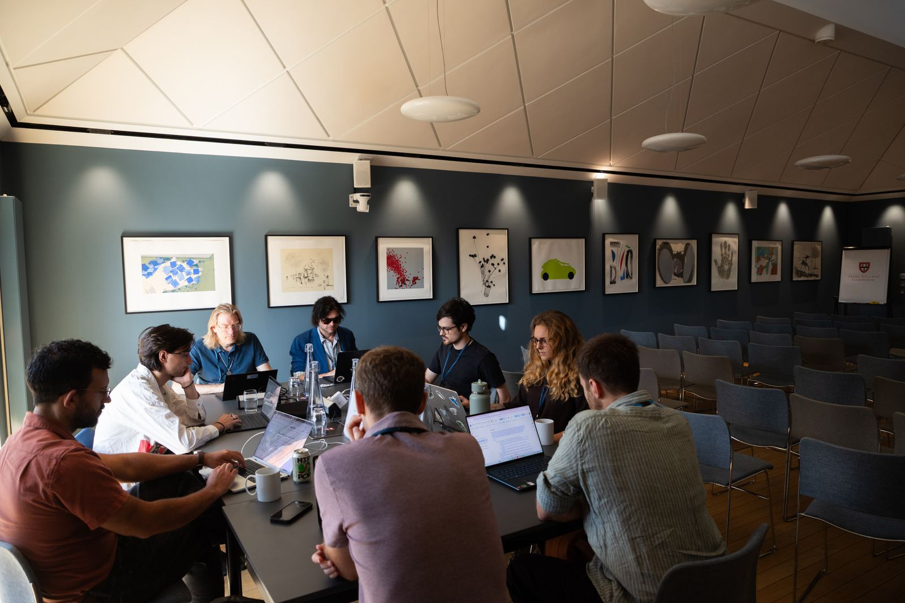

About CDM
Cambridge Digital Minds is a research initiative at the University of Cambridge focused on societal preparedness for digital minds, whether perceived or real.
Our mission
Help society prepare to make accurate, ethical, and well-reasoned decisions around digital minds, including questions of consciousness, welfare, moral status, and how we interact with them.
Our approach
We focus on improving societal decision-making under uncertainty through research, field-building, and institutional development. This includes anticipating societal dynamics, clarifying expert agreement and disagreement, developing responsible frameworks and standards, and building communities and institutions that can inform policy and public debate.
Our team
Cambridge Digital Minds is housed within the Leverhulme Centre for the Future of Intelligence at the Institute for Technology and Humanity, University of Cambridge.
Dr Bradford Saad
Senior Research Fellow, Oxford University & New York University
View profileDr Ali Ladak
Cambridge Digital Minds
Bridget Harris
Cambridge Digital Minds
Pooja Khatri
Cambridge Digital Minds
Austin Smith
Cambridge Digital Minds